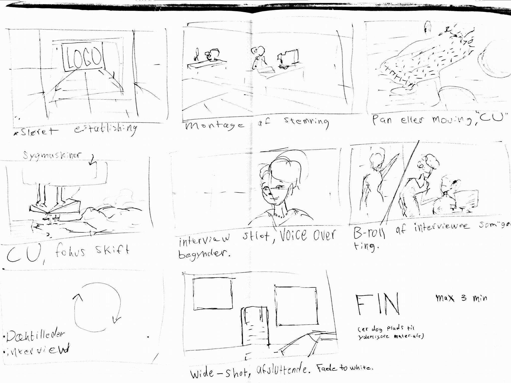

Da vi fik introduceret det nye emne Grundlæggende video, var vores første projekt et to ugers forløb. Vi blev inddelt i grupper og skulle derefter vælge en virksomhed som vi i første omgang kunne lave en præsentationsvideo af og samtidig kunne bruge til det næste projekt. I og med at projektet kun varede to uger, var der meget at lære på kort tid. Vi skulle først og fremmest lære at benytte os af udstyr som nogle af os ikke rigtig tidligere havde gjort brug af.
Derudover var kravende at vi mindst skulle have 10 skud/indstillinger med mindst 5 forskellige framings inkl. et establishmentshot. Derudover skulle vi have et interview eller dialog og lyd fra location, både med optagelse fra kamera og ekstern mikrofon.
Derudover skulle vi også have et grafisk element som enten kunne være intro eller outfro tekst eller andet.Derudover skulle vi bruge redigeringsprogrammer og lave colorcorrection, sound overlay osv. Det var også vigtigt at finde det mest relevante udstyr for at kunne lave en video af høj kvalitet, både video men også lydmæssigt, hvilket var et stort ønske for alle. Nedenunder ses storyboard til videoen.
" 